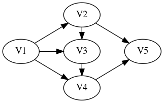
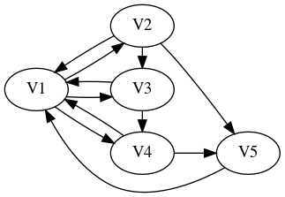

Midterm Project 2 -- ``PageRank`` **Solutions**
Consider the following basic model of surfing the web. A user begins surfing at a particular website. From the set of outgoing links from this site, a choice is made, with each link given equal probability. This transition brings the user to a new page, where the process is repeated. Let’s model this system as a Markov Chain …
The adjacency matrix \(A\) has the property that \(A\mathbf{e}_i\) is the sum of all the standard basis vectors \(\mathbf{e}_j\) for which there is an edge \(a_i \to a_j\). In other words: the \(s,t\) entry of \(A\) satisfies \[A_{s,t} = \left\{\begin{matrix} 1 & \text{if there is an edge $a_t \to a_s$} \\ 0 & \text{otherwise}\end{matrix} \right.\]
Using \(A\), we create the “naive” transition matrix \(T\) whose entries are the equally-weighted probabilities.
And then we create the PageRank transition matrix for the damping probability \(p\):
\[C = (1-p)T + p \mathbf{1}\]
where \(\mathbf{1}\) is the “all-ones matrix”.
1 Describing the matrix \(C\).
Given an \(n \times n\) adjacency matrix \(A\), let’s write \(C\) for the corresponding
\(n \times n\) PageRank transition matrix, where \(p\) denotes the damping probability.
If the j-th column of the matrix \(A\) is equal to
\(\mathbf{0}\), then for each \(0 \le i \le n-1\), we have
\(C_{i,j} = \dfrac{1-p}{n} + \dfrac{p}{n} = \dfrac{1}{n}.\)
Note that the sum \(s\) of the entries in the \(j\)-th column of \(A\) is given by the product \(\mathbf{1}^T \cdot A \cdot \mathbf{e}_j\) where \(\mathbf{1}\) denotes the “all-ones column vector”.
In other words,
import numpy as np
s == np.ones(n) @ A[:,j]Now, suppose the sum \(s\) of the entries of the j-th column of the matrix
\(A\) satisfies \(s>0\). For each i=0,...,n-1 we have
\(C_{i,j} = \dfrac{p}{n}\) whenever \(A_{i,j} = 0\)
\(C_{i,j} = \dfrac{1-p}{s} + \dfrac{p}{n}\) whenever \(A_{i,j} \ne 0\).
2 Producing the damped transition matrix via code
Using these formulas, we can write a python function make_transition to create
the PageRank (damped) transition matrix from an adjacency matrix \(A\), as follows:
## compute the i,j entry of the naive transition matrix from the adjacency matrix
##
def naive_transition(A,n,i,j):
s = np.ones(n) @ A[:,j]
if s == 0:
return 1/n # jth node is a sink
else:
return A[i,j]/s
## make the damped transition matrix from the adjacency matrix
## and the damping probability p
##
def make_transition(A,p):
(n,m) = A.shape
if n == m:
return np.array([[ p/n + (1-p)*naive_transition(A,n,i,j)
for j in range(n) ]
for i in range(n) ])For example, consider the following adjacency matrix A.
A = np.array([[ 0, 0, 0, 0, 0 ],
[ 1, 0, 0, 0, 0 ],
[ 1, 1, 0, 0, 0 ],
[ 1, 0, 1, 0, 0 ],
[ 0, 1, 0, 1, 0 ]]) we use the above code to compute find the damped transition matrix:
float_formatter = "{:.5f}".format
np.set_printoptions(formatter={'float_kind':float_formatter})
C = make_transition(A,p=0.8)
C
=>
array([[0.16000, 0.16000, 0.16000, 0.16000, 0.20000],
[0.22667, 0.16000, 0.16000, 0.16000, 0.20000],
[0.22667, 0.26000, 0.16000, 0.16000, 0.20000],
[0.22667, 0.16000, 0.36000, 0.16000, 0.20000],
[0.16000, 0.26000, 0.16000, 0.36000, 0.20000]])And we can test that the result is indeed a stochastic matrix:
np.ones(5) @ C
=>
array([1.00000, 1.00000, 1.00000, 1.00000, 1.00000]) 3 The principal eigenvector for a particular directed graph.
Let us consider the directed graph

The graph has 5 nodes. The corresponding adjacency matrix is given by
A3 = np.array([[0, 0, 0, 0, 0 ],
[1, 0, 0, 0, 0 ],
[1, 1, 0, 0, 0 ],
[1, 0, 1, 0, 0 ],
[0, 1, 0, 1, 0 ]])We compute the damped transition matrices for damping p=.8 and
when p=.4, and we compute corresponding eigenvalues/eigenvectors:
C3=make_transition(A3,p=.8)
D3=make_transition(A3,p=.4)
valsC3,vecsC3 = np.linalg.eig(C3)
=>
array([ 1. +0.j , -0.0155051+0.10500275j,
-0.0155051-0.10500275j, -0.0644949+0.0239671j ,
-0.0644949-0.0239671j ])
valsD3,vecsD3 = np.linalg.eig(D3)
valsD3
=>
array([ 1. +0.j , -0.04651531+0.31500826j,
-0.04651531-0.31500826j, -0.19348469+0.0719013j ,
-0.19348469-0.0719013j ])In both cases, we see that the 1-eigenvector is in the 0th column. Recall that we need to normalize the eigenvectors to obtain probability vectors (we must arrange that the sum of the entries in the vector is equal to 1):
def normalize(v):
n = v.shape
s = np.ones(n) @ v
vv = (1/s)*v ## compute the normalized vector
return np.real_if_close(vv) ## if the imaginary parts of the coeffs are "small", drop them
## normalized 1-eigenvector for damping p=.8
normalize(vecsC3[:,0])
=>
array([0.16925, 0.18054, 0.19859, 0.22026, 0.23136])
## normalized 1-eigenvector for damping p=.4
normalize(vecsD3[:,0])
=>
array([0.11713, 0.14055, 0.18272, 0.25019, 0.30941])Now, our construction has guaranteed that – for each damping probability \(p\) – the damped transition matrix correspond to transition diagrams for Markov processes satisfying the hypotheses of the the Frobenius-Perron Theorem. According to that Theorem, the transition matrix has eigenvalue \(\lambda = 1\) with multiplicity 1, and all other eigenvalues \(\mu\) have \(|\mu| < 1\).
If \(\mathbf{v}\) is a normalized eigenvector for eigenvalue \(\lambda = 1\), this vector describes the probabilities for the long-term behavior
of the system. In other words, the coefficient in the jth entry of
this normalized eigenvector represents the probability that a random
surfer is on the jth page in the long run.
In the two examples just calculated, we see that the probability of
being in node V5 in the long run is greatest; when p=0.8 that
probability is about 0.21 (or 23%) and when p=0.4 that probability
is about 0.31 (or 31%).
In our example, we can compare the probabilities predicted by the eigenvector
with those predicted by examining powers of the matrices C3 and D3.
np.linalg.matrix_power(C3,10)
=>
array([[0.16925, 0.16925, 0.16925, 0.16925, 0.16925],
[0.18054, 0.18054, 0.18054, 0.18054, 0.18054],
[0.19859, 0.19859, 0.19859, 0.19859, 0.19859],
[0.22026, 0.22026, 0.22026, 0.22026, 0.22026],
[0.23136, 0.23136, 0.23136, 0.23136, 0.23136]])
np.linalg.matrix_power(D3,10)
=>
array([[0.11713, 0.11713, 0.11713, 0.11713, 0.11713],
[0.14055, 0.14055, 0.14056, 0.14056, 0.14055],
[0.18272, 0.18272, 0.18272, 0.18273, 0.18272],
[0.25019, 0.25019, 0.25018, 0.25019, 0.25019],
[0.30941, 0.30942, 0.30941, 0.30940, 0.30941]])4 The principal eigenvector for a variation of the above directed graph.
The following diagram describes the same nodes as the previous diagram,
but includes some additional edges (i.e. links) – namely, it includes
links [w -> V1] for each vertex [w] different from [V1].

The adjacency matrix is given by
A4 = np.array([[0, 1, 1, 1, 1 ],
[1, 0, 0, 0, 0 ],
[1, 1, 0, 0, 0 ],
[1, 0, 1, 0, 0 ],
[0, 1, 0, 1, 0 ]])We repeat the calculations carried out above for this new adjacency matrix.
## calculate the damped transition matrices
##
C4=make_transition(A4,p=.8)
D4=make_transition(A4,p=.4)
## find the eigenvalues/vectors for the transition matrix C4:
valsC4,vecsC4 = np.linalg.eig(C4)
valsC4
=>
array([ 1. +0.j , -0.07788218+0.07338108j,
-0.07788218-0.07338108j, -0.02211782+0.05824321j,
-0.02211782-0.05824321j])
## find the eigenvalues/vectors for the transition matrix D4:
valsD4,vecsD4 = np.linalg.eig(D4)
valsD4
=>
array([ 1. +0.j , -0.23364655+0.22014324j,
-0.23364655-0.22014324j, -0.06635345+0.17472963j,
-0.06635345-0.17472963j])We see again that each transition matrix has eigenvalue 1 with multiplicity 1. The corresponding normalized eigenvectors are given by
## normalized 1-eigenvector for damping p=.8
normalize(vecsC4[:,0])
=>
array([0.24841, 0.17656, 0.18833, 0.19539, 0.19131])
## normalized 1-eigenvector for damping p=.4
normalize(vecsD4[:,0])
=>
array([0.31990, 0.14398, 0.17277, 0.19581, 0.16754])Now in both cases we see that the page V1 now has the highest
probability (0.25 when p=.8 and 0.32 when p=.4). This seems
reasonable because in the revised diagram, there are many more links
to the page V1.
5 The Frobenius-Perron Theorem for the damped transition matrix.
For any (finite) directed graph, we can create the adjacency matrix A
and for a probability p>0, we can produce the damped
PageRank transition matrix C for p>0.
By constuction, the matrix C is stochastic – i.e.
\(\mathbf{1}^T \cdot A \cdot \mathbf{e}_j = 1\) for each \(j\).
Since p>0, there is a link between every two nodes of the diagram
with positive probability. This shows both that the diagram is
strongly connected (there is a path between any two nodes) and acyclic
(since there are cycles of length 1).
Thus the hypotheses of the Frobenius-Perron Theorem always hold, and
we can conclude that the damped transition matrix C has eigenvalue
\(\lambda = 1\) with multiplicity 1, and every other eigenvalue \(\mu\)
satisfies \(|\mu| < 1\).
6 Computations with some data.
We use the following code to extract formatted data (json) from
a file.
The data file contains entries like
[
{
"from": "Blue Whale",
"to": "Snail"
},
{
"from": "Blue Whale",
"to": "Alligator"
},
...
] From the visible data, we see that Blue Whale, Snail, and
Alligator are nodes (pages) and that there are links [Blue Whale] -> [Snail] and [Blue Whale] -> [Alligator].
The function adj_from_json extracts data from the json file, and
returns a pair (ll,A) where
llis a list of the node names defined in thejsonfileAis the adjacency matrix determined by the directed graph described by thefrom/topairs.
import json
import numpy as np
float_formatter = "{:.5f}".format
np.set_printoptions(formatter={'float_kind':float_formatter})
def bv(it,items):
return np.array([1.0 if i == items.index(it)
else 0.0 for i in range(len(items))])
## >>> bv("c",["a","b","c","d"])
## array([0.00000, 0.00000, 1.00000, 0.00000])
def adj_from_json(json_file):
with open(json_file) as f:
adj_data = json.load(f)
dict = {}
for i in adj_data:
lfrom = i['from']
lto = i['to']
if lfrom in dict.keys():
dict[lfrom].add(lto)
else:
dict[lfrom] = set()
dict[lfrom].add(lto)
if not(lto in dict.keys()):
dict[lto] = set()
sites = list(dict.keys())
A = np.array([sum([bv(l_to,sites) for l_to in dict[l_from]],
np.zeros(len(sites)))
for l_from in sites])
return (sites, A)Let’s get the required data and make the corresponding damped transition matrix
for p=0.8.
## the argument you use will vary...
(ll,AA) = adj_from_json("/home/george/Classes/2024-Sp-Math087/course-assets/code/MidRep2-data.json")
CC = make_transition(AA,p=0.8)
CC.shape
=>
(93,93)
len(ll)
=>
93
# inspect the first 10 page names...
ll[0:10]
=>
['Blue Whale',
'Snail',
'Alligator',
'Lark',
'Fruit Bat',
'Gerbil',
'Hyena',
'Starfish',
'Carp',
'Bee']
CC
=>
array([[0.00860, 0.01971, 0.01660, ..., 0.00860, 0.00860, 0.00860],
[0.00860, 0.00860, 0.00860, ..., 0.00860, 0.00860, 0.00860],
[0.01769, 0.00860, 0.00860, ..., 0.00860, 0.00860, 0.00860],
...,
[0.00860, 0.00860, 0.00860, ..., 0.00860, 0.00860, 0.00860],
[0.00860, 0.00860, 0.00860, ..., 0.00860, 0.00860, 0.00860],
[0.00860, 0.00860, 0.00860, ..., 0.00860, 0.00860, 0.00860]])We see that there are 93 “pages” (apparently named after various
animals).
Let’s find the eigenvectors and eigenvalues of the damped transition
matrix CC.
ccvals,ccvecs = np.linalg.eig(CC)
## inspect the eigenvalues
ccvals
=>
ccvals,ccvecs = np.linalg.eig(CC)
ccvals
array([ 1.00000000e+00+0.j , 5.81335370e-02+0.09862851j,
5.81335370e-02-0.09862851j, 1.10155151e-01+0.j ,
8.09646903e-02+0.07090688j, 8.09646903e-02-0.07090688j,
9.32008734e-02+0.04660742j, 9.32008734e-02-0.04660742j,
-1.14948480e-01+0.j , -1.06389167e-01+0.j ,
2.89649299e-02+0.09979826j, 2.89649299e-02-0.09979826j,
-1.56819457e-02+0.10588806j, -1.56819457e-02-0.10588806j,
9.93204040e-02+0.01613876j, 9.93204040e-02-0.01613876j,
-1.00611645e-01+0.04570818j, -1.00611645e-01-0.04570818j,
6.89643622e-03+0.1030294j , 6.89643622e-03-0.1030294j ,
-7.94183273e-02+0.07085312j, -7.94183273e-02-0.07085312j,
4.86905798e-02+0.0823792j , 4.86905798e-02-0.0823792j ,
9.42368093e-02+0.00672646j, 9.42368093e-02-0.00672646j,
-1.01089822e-01+0.03183306j, -1.01089822e-01-0.03183306j,
-1.31544158e-02+0.09723973j, -1.31544158e-02-0.09723973j,
8.21566725e-02+0.03741955j, 8.21566725e-02-0.03741955j,
-7.54377898e-02+0.06346874j, -7.54377898e-02-0.06346874j,
4.38950297e-03+0.08976249j, 4.38950297e-03-0.08976249j,
-8.59004198e-02+0.03558716j, -8.59004198e-02-0.03558716j,
-2.78005174e-02+0.07997022j, -2.78005174e-02-0.07997022j,
7.34876563e-02+0.02449853j, 7.34876563e-02-0.02449853j,
-6.98170161e-02+0.04486211j, -6.98170161e-02-0.04486211j,
-5.14204833e-02+0.06215736j, -5.14204833e-02-0.06215736j,
3.88711135e-02+0.05850915j, 3.88711135e-02-0.05850915j,
-7.68717429e-02+0.j , 7.17116206e-02+0.j ,
-6.45147990e-02+0.03444725j, -6.45147990e-02-0.03444725j,
-1.89286725e-02+0.06732008j, -1.89286725e-02-0.06732008j,
1.69280918e-02+0.06639025j, 1.69280918e-02-0.06639025j,
-2.93686414e-02+0.0545441j , -2.93686414e-02-0.0545441j ,
5.33965743e-02+0.02106016j, 5.33965743e-02-0.02106016j,
-6.05459242e-02+0.00506888j, -6.05459242e-02-0.00506888j,
3.93599474e-02+0.02347753j, 3.93599474e-02-0.02347753j,
1.63307675e-02+0.04074528j, 1.63307675e-02-0.04074528j,
-1.02712318e-02+0.04567562j, -1.02712318e-02-0.04567562j,
3.59265964e-02+0.j , 3.33850803e-02+0.01220985j,
3.33850803e-02-0.01220985j, -4.35751117e-02+0.j ,
-3.30623894e-02+0.02901733j, -3.30623894e-02-0.02901733j,
9.92635417e-03+0.03167826j, 9.92635417e-03-0.03167826j,
-4.09327636e-02+0.j , -5.32715066e-03+0.03070314j,
-5.32715066e-03-0.03070314j, 2.14813671e-02+0.j ,
-2.82100528e-02+0.01202141j, -2.82100528e-02-0.01202141j,
1.83637684e-03+0.01947041j, 1.83637684e-03-0.01947041j,
-1.62627983e-02+0.01669296j, -1.62627983e-02-0.01669296j,
-1.85868871e-02+0.j , -7.80292050e-03+0.01073254j,
-7.80292050e-03-0.01073254j, -3.21783933e-03+0.j ,
1.63520244e-17+0.j , -5.55607577e-17+0.j ,
2.92028556e-17+0.j ])It seems reasonably clear that 1 appears only once and all other
eigenvalues have absolute value < 1, but for an even longer list this
would be clumsier. We can use numpy tools to confirm this, though, as follows:
accvals = np.abs(ccvals) ## compute the absolute value of each eigenvalue and store the result in a list
accvals.sort() ## sort the list of absolute values
accvals ## inspect the sorted list
=>
array([0.00000, 0.00000, 0.00000, 0.00322, 0.01327, 0.01327, 0.01859,
0.01956, 0.01956, 0.02148, 0.02331, 0.02331, 0.03066, 0.03066,
0.03116, 0.03116, 0.03320, 0.03320, 0.03555, 0.03555, 0.03593,
0.04093, 0.04358, 0.04390, 0.04390, 0.04399, 0.04399, 0.04583,
0.04583, 0.04682, 0.04682, 0.05740, 0.05740, 0.06076, 0.06076,
0.06195, 0.06195, 0.06851, 0.06851, 0.06993, 0.06993, 0.07024,
0.07024, 0.07171, 0.07314, 0.07314, 0.07687, 0.07746, 0.07746,
0.08067, 0.08067, 0.08299, 0.08299, 0.08466, 0.08466, 0.08987,
0.08987, 0.09028, 0.09028, 0.09298, 0.09298, 0.09448, 0.09448,
0.09569, 0.09569, 0.09813, 0.09813, 0.09859, 0.09859, 0.10062,
0.10062, 0.10326, 0.10326, 0.10392, 0.10392, 0.10420, 0.10420,
0.10598, 0.10598, 0.10639, 0.10643, 0.10643, 0.10704, 0.10704,
0.10762, 0.10762, 0.11016, 0.11051, 0.11051, 0.11449, 0.11449,
0.11495, 1.00000])Now we see with certainty that there is only one eigenvalue equal to
1, and all others have absolute value < 1.
Moreover, the 1-eigenvector is the first column of ccvecs. Normalizing
this eigenvector gives us the long-term probabilities for the pages.
animal_page_probabilities = normalize(ccvecs[:,0])
animal_page_probabilities
=>
array([0.01354, 0.01062, 0.01035, 0.01104, 0.01052, 0.01188, 0.01002,
0.01031, 0.01183, 0.01022, 0.01012, 0.01007, 0.00988, 0.01015,
0.01010, 0.01080, 0.01159, 0.01011, 0.01061, 0.01040, 0.01035,
0.01061, 0.01027, 0.01070, 0.00984, 0.01156, 0.01083, 0.01148,
0.01043, 0.01071, 0.01045, 0.01052, 0.00997, 0.01191, 0.01271,
0.01016, 0.01172, 0.00999, 0.01046, 0.01070, 0.01161, 0.01093,
0.00986, 0.01069, 0.01132, 0.01045, 0.01029, 0.01021, 0.01145,
0.01062, 0.01182, 0.01063, 0.01082, 0.01098, 0.01075, 0.01067,
0.01064, 0.01160, 0.01022, 0.01062, 0.01058, 0.01053, 0.01010,
0.00995, 0.01059, 0.01013, 0.01309, 0.01059, 0.01032, 0.00996,
0.01215, 0.01044, 0.00998, 0.01127, 0.01005, 0.01104, 0.01076,
0.01202, 0.01077, 0.01101, 0.00996, 0.01084, 0.01042, 0.01050,
0.01082, 0.01053, 0.01013, 0.01205, 0.01052, 0.01176, 0.01050,
0.01060, 0.01033])Let’s use the probabilities to report the top 10 pages.
animal_rank = [ (ll[i],animal_page_probabilities[i]) for i in range(len(ll)) ]
## animal_rank now contains pairs ( animal name, probability )
## let's inspect the first 10
animal_rank[0:10]
=>
[('Blue Whale', 0.013536168250393851),
('Snail', 0.01061748386858462),
('Alligator', 0.010350920780631163),
('Lark', 0.011041130183901918),
('Fruit Bat', 0.01052325910687038),
('Gerbil', 0.01188468617792059),
('Hyena', 0.01002245061258836),
('Starfish', 0.010314486898227157),
('Carp', 0.011826666513123014),
('Bee', 0.010215924772345095)]Now sorting the list animal_rank in descending order using the
probability entry as the key for the sort, we find the top 10 pages
animal_rank.sort(key= lambda x: -x[1])
animal_rank[0:10]
=>
[('Blue Whale', 0.013536168250393851),
('Ant', 0.013085585380475655),
('Donkey', 0.012713237966476582),
('Squirrel', 0.012151346209255502),
('Rook', 0.01204650009799565),
('Grouse', 0.012020480385893456),
('Fowl', 0.01190910776280802),
('Gerbil', 0.01188468617792059),
('Carp', 0.011826666513123014),
('Albatross', 0.011817909284220714)]We can automate extracting the top 10 with a function
def extracttop10(ll,AA,p):
## make the transition matrix from the given adjacency matrix
CC=make_transition(AA,p)
## get the eigenvalues and eigenvectors of CC
evals,evecs = np.linalg.eig(CC)
## find the index of the eigenvalue 1.
i = [ i if abs(evals[i] - 1)< 1e-4 else None for i in range(len(evals)) ][0]
## get the normalized eigenvectors for eigenvalue 1
animal_page_probabilities = normalize(evecs[:,i])
## sort the pairs ( page, page-probability)
animal_rank = [ (ll[i],animal_page_probabilities[i]) for i in range(len(ll)) ]
animal_rank.sort(key=lambda x: -x[1])
## and return the top 10
return animal_rank[0:10]Now we can see the effects of changing the damping probabilty p:
for p in [.8 - .1*i for i in range(5)]:
print(f"p = {p:.1}")
for z in extracttop10(ll,AA,p):
print(z)
print("---")
=>
p = 0.8
('Blue Whale', 0.013536168250393851)
('Ant', 0.013085585380475655)
('Donkey', 0.012713237966476582)
('Squirrel', 0.012151346209255502)
('Rook', 0.01204650009799565)
('Grouse', 0.012020480385893456)
('Fowl', 0.01190910776280802)
('Gerbil', 0.01188468617792059)
('Carp', 0.011826666513123014)
('Albatross', 0.011817909284220714)
---
p = 0.7
('Blue Whale', 0.015018877810741557)
('Ant', 0.014163959071792166)
('Donkey', 0.013673571422727786)
('Rook', 0.012867462131640901)
('Squirrel', 0.012761305271685017)
('Grouse', 0.012635398897967906)
('Fowl', 0.012583401286290251)
('Gerbil', 0.012550152776914202)
('Carp', 0.012463458881175884)
('Albatross', 0.012442794858579156)
---
p = 0.6
('Blue Whale', 0.01658597753383941)
('Ant', 0.015224920770049603)
('Donkey', 0.014627840325647233)
('Rook', 0.013777791946367293)
('Squirrel', 0.01330961897031871)
('Fowl', 0.01328679220977628)
('Gerbil', 0.013267952762531062)
('Grouse', 0.013248162718688948)
('Carp', 0.01316067379637)
('Albatross', 0.013144879993912102)
---
p = 0.5
('Blue Whale', 0.01825176753025187)
('Ant', 0.016300312179253696)
('Donkey', 0.015582741824297787)
('Rook', 0.014757533023902241)
('Gerbil', 0.014028343256687453)
('Fowl', 0.013994274892283045)
('Albatross', 0.013933485760208744)
('Carp', 0.013913511207356382)
('Grouse', 0.013868311371992712)
('Squirrel', 0.013794207834994613)
---
p = 0.4
('Blue Whale', 0.020028169184583642)
('Ant', 0.017424975927025417)
('Donkey', 0.016544660161517538)
('Rook', 0.015786803069689003)
('Gerbil', 0.014822569897437046)
('Albatross', 0.014816272925140058)
('Carp', 0.014715684339538357)
('Fowl', 0.014683318629935478)
('Grouse', 0.01450549030548999)
('Squirrel', 0.01421295027975862)
---The first change in the top 10 ranking occurred when changing from
p=0.8 to p=0.7 (Rook and Squirrel change places), with
slightly more drastic changes for still smaller values of p.
7 Alternate uses for PageRank?
We consider the following question:
The damping probability
0 < p ≤ 1forces thePageRanktransition matrix to satisfy the conclusion of the Perron-Frobenius Theorem. As we discussed above, from the point-of-view of ranking web pages this quantity represents the probability that a random web-surfer gets bored and makes a random new choice of sites. In particular, this provides a reasonable self-contained explanation for the use of thisPageRanktransition matrix.
On the other hand, one might hope to use the
PageRankapproach to rank other “linked material”. For example, one might try to rank published academic papers by citation.
Is this a reasonable proposal?
Certainly the ranking task is similar, and using the damped transition matrix is attractive since it “forces” the hypotheses of Frobenius-Perron to be true, so that the 1-eigenvector describes the long-term probabilities.
On the other hand, how well the damping model should apply in the setting of academic papers is perhaps debatable – to what extent is it reasonable to model use of academic papers randomly? Though perhaps this debate comes down to “what should be the damping probability \(p\)?”